梅吉お留守番と札幌帰省 [梅吉]
･゜ﾟ･*:.｡..｡.:*･゜ﾟ･*:.｡. .｡.:*･゜ﾟ･*･゜ﾟ･*:.｡..｡.:*･゜ﾟ･*:.｡..｡.:*･゜ﾟ･*

引き続きのお願いです。猫を探しています。
不明になったのは今年１月頃と見られていますが不確定です。
それ以前の可能性もあります。★拡散希望★兄弟猫脱走【千葉県我孫子市】
なにか情報＆捜索のヒントがありましたらコメント欄でも構いません。
お知らせくださいませm(_ _)m
･゜ﾟ･*:.｡..｡.:*･゜ﾟ･*:.｡. .｡.:*･゜ﾟ･*･゜ﾟ･*:.｡..｡.:*･゜ﾟ･*:.｡..｡.:*･゜ﾟ･*

このスリッパを履いた足にガブリついている梅吉さんは・・・
そうです！
お盆休みに入って早々、一泊で札幌に帰省して来ました。
この写真は例のごとく帰省中にシッターさんから送られて来たものです(⌒_⌒;
（我が家のお留守番事情の記事はこちら）
我が家がお願いしているシッターさん、10月に赤ちゃんが生まれるので産休に入ります。
（シッターさんは若いけど個人事業主。シッター稼業、辞めないよね？って聞いたら
辞めません！って言ってくれました。よかった〜。）
で、今回新しいスタッフの方と一緒に打ち合わせに来ていただいたのが８月初め。
その時梅吉はとってもおとなしくて、シッターさんに静かに撫でられたりしていました。

その時の写真は撮り忘れちゃったんですが
ホント、こんな顔しておとなしく撫でられていたものだから
「梅吉くん、おとなしいね！」「いい子だね！！」「仏（爆）、みたいだね！！！」
なんて盛大に褒めてもらっていたのに・・・

こんな風にすりすりしたと思ったらガブッとしていたようです。
以下シッターさんからのメールの抜粋です。
出かけた日の夜のメール
『玄関を開けると梅吉くんが足元でお出迎えしてくれました。
ニオイチェックしたあと、スリスリーとしてくれ、あれ？大丈夫かも?と、思った瞬間
パンチからの噛みとダブル攻撃でした。笑
開始早々にツンとデレのダブルアタックでした。
スリッパを履き、中に進む廊下では永遠に足元への攻撃が止むことはなかったです。笑』
翌日の朝のメール
『今日もしっかり玄関で待ち構えていた梅吉くん。
まずはいつものスリスリ?からの鼻息フンフンッ！
これは早くスリッパを履かないと![[あせあせ（飛び散る汗）]](https://blog.ss-blog.jp/_images_e/162.gif) と思ってる間に第一弾攻撃開始です笑
と思ってる間に第一弾攻撃開始です笑
やっぱり打ち合わせでは猫被ってましたね^^;』
梅吉、やる時はやる漢、のようですwww
仏の梅吉になるのはまだ早い。おかーさんは安心しましたよ！
がぶがぶ＆パンチを繰り出している時以外はシッターさんのお世話で元気にご飯を食べ

おやつをもらって

無事に過ごしていてくれました＾＾

夕方帰宅すると玄関開けたら１秒で猫。（梅吉が写っていませんが）

「ただいまー！」喜びの抱擁Ｏ(≧▽≦)Ｏ
留守番お疲れ様でした＾＾
 ↑ガブッと一押し↑
↑ガブッと一押し↑
帰省の飛行機、搭乗時間が３０分近く過ぎても機内にいないとんでもない乗客が数名・・・
その後の離陸順番待ちを合わせると１時間近く遅れてやっと伊丹から飛び立ちました。
あああ、せっかく大通公園のビヤガーデンに行こうと思っていたのにwww
時間が無くなっちゃった。
（JALの搭乗券の半券で一杯タダ飲み出来たのです。）
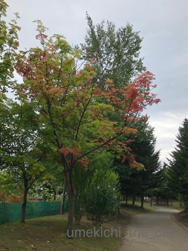
降り立った札幌は今にも降り出しそうな曇り空です。
どんよりと蒸し暑くてがっかり。夜も寝苦しかった・・・
それでも確実に秋の気配を感じましたよー。
上の写真はナナカマド。おっとの実家近くの公園なんですが
もう紅葉が始まっていました。
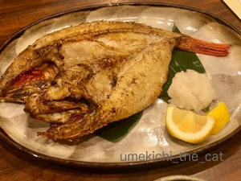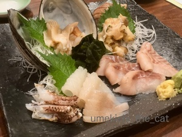
夕食は根室の回転寿司屋さんがやっている居酒屋さんで海鮮三昧。
左はきんき、右はクロソイ等のお刺身盛り合わせ。
久しぶりに根室のお酒「北の勝」を飲んじゃいましたよー。
翌朝は早々に実家を後にして今回楽しみにしていた175°DENO担々麺へ。
（リュカさんがこよなく愛する担々麺w)
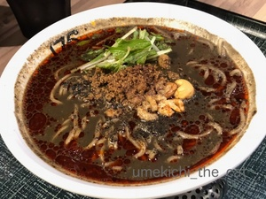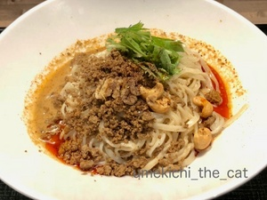
このお店、私たちが札幌を離れた後にオープンしました。
残念だなぁー。札幌に住んでいる時営業していたら通い詰めてた。
初心者なので二人ともまずは２痺（３痺まで通常メニュー。その後は有料での痺れ増しになります）。
次回行ったら３痺＋有料増し増しにしようと固く決意。
開店直後の10時半に行ったのですが朝から担々麺とビールが美味しかったわ。
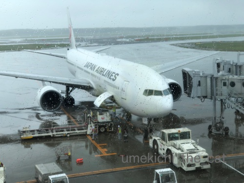
千歳空港に着いたら本降りになっていました。
今回は天候に恵まれなかったです。
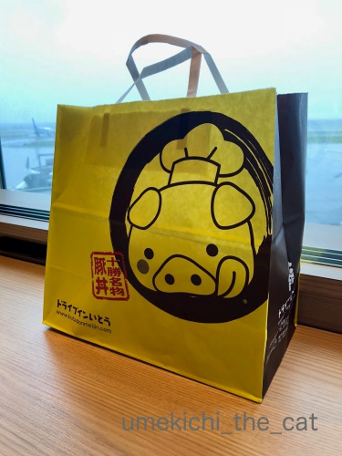
夕食用に買った帯広名物豚丼。これはオススメですよ＾＾
空港内レストランでお弁当が売っています。
セキュリティーを通った後にもお店が出来てましたが
お弁当が売っていたかは不明です。
（ちゃんとチェックしてくれば良かった。求む、情報です）
関西に近づくと快晴。
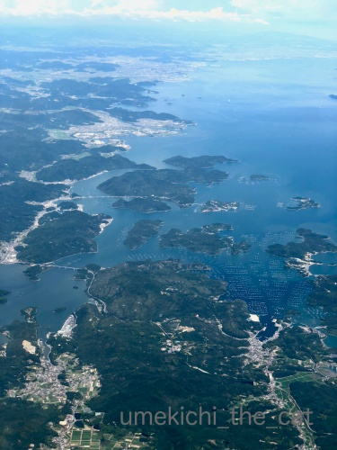
小豆島近辺が綺麗に見えましたよ＾＾
この後明石海峡大橋と神戸空港が見えて関空に着陸しました。
この二つが見えると「ああ、関西に帰って来たな」って気持ちになります。
実家を離れて何年も経つと帰っても「人の家」って感じで
寛げないしゆっくり眠れません。
暑くて寝苦しいけどやっぱり梅吉と一緒の我が家がいいな=´ᆺ`=
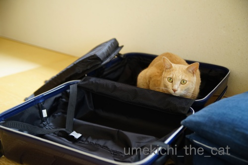
「つぎは わしも いっしょにいくで」と主張する梅吉さんw

引き続きのお願いです。猫を探しています。
不明になったのは今年１月頃と見られていますが不確定です。
それ以前の可能性もあります。★拡散希望★兄弟猫脱走【千葉県我孫子市】
なにか情報＆捜索のヒントがありましたらコメント欄でも構いません。
お知らせくださいませm(_ _)m
･゜ﾟ･*:.｡..｡.:*･゜ﾟ･*:.｡. .｡.:*･゜ﾟ･*･゜ﾟ･*:.｡..｡.:*･゜ﾟ･*:.｡..｡.:*･゜ﾟ･*

このスリッパを履いた足にガブリついている梅吉さんは・・・
そうです！
お盆休みに入って早々、一泊で札幌に帰省して来ました。
この写真は例のごとく帰省中にシッターさんから送られて来たものです(⌒_⌒;
（我が家のお留守番事情の記事はこちら）
我が家がお願いしているシッターさん、10月に赤ちゃんが生まれるので産休に入ります。
（シッターさんは若いけど個人事業主。シッター稼業、辞めないよね？って聞いたら
辞めません！って言ってくれました。よかった〜。）
で、今回新しいスタッフの方と一緒に打ち合わせに来ていただいたのが８月初め。
その時梅吉はとってもおとなしくて、シッターさんに静かに撫でられたりしていました。

その時の写真は撮り忘れちゃったんですが
ホント、こんな顔しておとなしく撫でられていたものだから
「梅吉くん、おとなしいね！」「いい子だね！！」「仏（爆）、みたいだね！！！」
なんて盛大に褒めてもらっていたのに・・・
こんな風にすりすりしたと思ったらガブッとしていたようです。
以下シッターさんからのメールの抜粋です。
出かけた日の夜のメール
『玄関を開けると梅吉くんが足元でお出迎えしてくれました。
ニオイチェックしたあと、スリスリーとしてくれ、あれ？大丈夫かも?と、思った瞬間
パンチからの噛みとダブル攻撃でした。笑
開始早々にツンとデレのダブルアタックでした。
スリッパを履き、中に進む廊下では永遠に足元への攻撃が止むことはなかったです。笑』
翌日の朝のメール
『今日もしっかり玄関で待ち構えていた梅吉くん。
まずはいつものスリスリ?からの鼻息フンフンッ！
これは早くスリッパを履かないと
やっぱり打ち合わせでは猫被ってましたね^^;』
梅吉、やる時はやる漢、のようですwww
仏の梅吉になるのはまだ早い。おかーさんは安心しましたよ！
がぶがぶ＆パンチを繰り出している時以外はシッターさんのお世話で元気にご飯を食べ

おやつをもらって

無事に過ごしていてくれました＾＾

夕方帰宅すると玄関開けたら１秒で猫。（梅吉が写っていませんが）

「ただいまー！」喜びの抱擁Ｏ(≧▽≦)Ｏ
留守番お疲れ様でした＾＾
帰省の飛行機、搭乗時間が３０分近く過ぎても機内にいないとんでもない乗客が数名・・・
その後の離陸順番待ちを合わせると１時間近く遅れてやっと伊丹から飛び立ちました。
あああ、せっかく大通公園のビヤガーデンに行こうと思っていたのにwww
時間が無くなっちゃった。
（JALの搭乗券の半券で一杯タダ飲み出来たのです。）
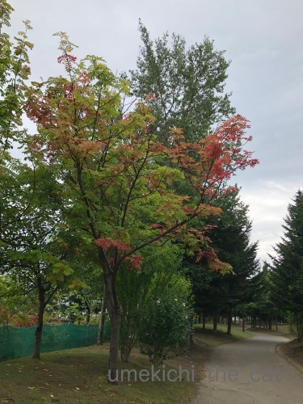
降り立った札幌は今にも降り出しそうな曇り空です。
どんよりと蒸し暑くてがっかり。夜も寝苦しかった・・・
それでも確実に秋の気配を感じましたよー。
上の写真はナナカマド。おっとの実家近くの公園なんですが
もう紅葉が始まっていました。
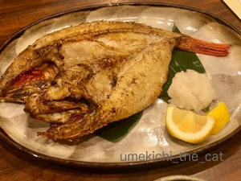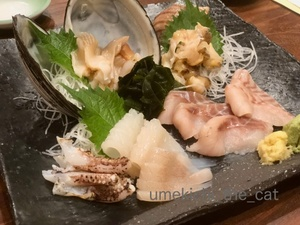
夕食は根室の回転寿司屋さんがやっている居酒屋さんで海鮮三昧。
左はきんき、右はクロソイ等のお刺身盛り合わせ。
久しぶりに根室のお酒「北の勝」を飲んじゃいましたよー。
翌朝は早々に実家を後にして今回楽しみにしていた175°DENO担々麺へ。
（リュカさんがこよなく愛する担々麺w)
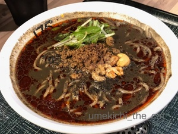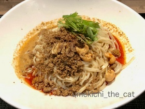
このお店、私たちが札幌を離れた後にオープンしました。
残念だなぁー。札幌に住んでいる時営業していたら通い詰めてた。
初心者なので二人ともまずは２痺（３痺まで通常メニュー。その後は有料での痺れ増しになります）。
次回行ったら３痺＋有料増し増しにしようと固く決意。
開店直後の10時半に行ったのですが朝から担々麺とビールが美味しかったわ。
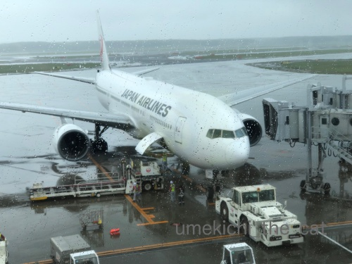
千歳空港に着いたら本降りになっていました。
今回は天候に恵まれなかったです。
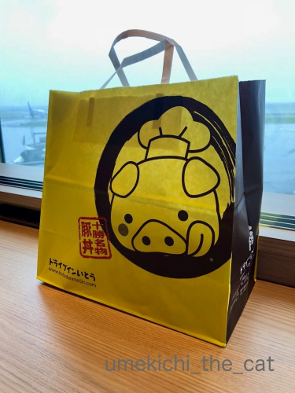
夕食用に買った帯広名物豚丼。これはオススメですよ＾＾
空港内レストランでお弁当が売っています。
セキュリティーを通った後にもお店が出来てましたが
お弁当が売っていたかは不明です。
（ちゃんとチェックしてくれば良かった。求む、情報です）
関西に近づくと快晴。
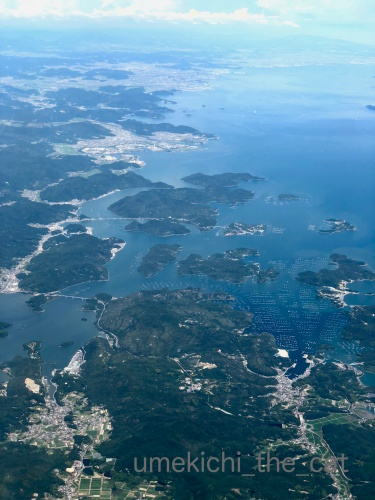
小豆島近辺が綺麗に見えましたよ＾＾
この後明石海峡大橋と神戸空港が見えて関空に着陸しました。
この二つが見えると「ああ、関西に帰って来たな」って気持ちになります。
実家を離れて何年も経つと帰っても「人の家」って感じで
寛げないしゆっくり眠れません。
暑くて寝苦しいけどやっぱり梅吉と一緒の我が家がいいな=´ᆺ`=
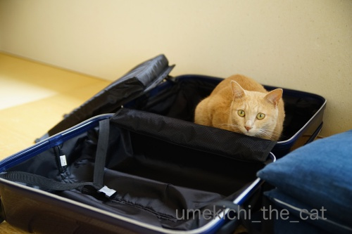
「つぎは わしも いっしょにいくで」と主張する梅吉さんw

カフェオレ色の梅吉

梅吉 2023年8月10日 永眠


梅吉と出会った譲渡会

犬猫の理由なき殺処分ゼロ
妄想広告
UMEKICHI 光

爆発的に早い！
時々攻撃的！
Thanks to Mr.Boss365
爆発的に早い！
時々攻撃的！
Thanks to Mr.Boss365

お留守番がんばったねー梅さん♪
シッターさんの相性ってだいじですよね＾＾
おいしいものたべて充電してこれましたか？(*^─^*)
猫毬は機内からのディズニーの灯でホっとします♪
やっぱりひとそれぞれのホームなんですねぇ＾－＾
おつかれさまでした＾＾
by 猫毬 (2018-08-20 02:54)
仏の梅吉様の御尊顔、慈悲に満ちてますね(T_T)
ガブガブしてても、おやつはもらうんだ(^_^;)
一泊とは駆け足ですが梅吉様ファーストか^_^;
by middrinn (2018-08-20 06:06)
梅吉さん、お留守番頑張りましたね。
カプなら愛情表現かなとも思いますが
ガブガブは遠慮したいです＾＾；
by ぽちの輔 (2018-08-20 07:18)
梅吉さん！お留守番頑張りましたね♪
ってスリッパがぶりとな(#^.^#)
さすが梅吉さんです♪
楽しそうで何よりですね！
by きぃ (2018-08-20 07:20)
梅吉さん、シッターさんにスリスリ＆ガブ攻撃とは
お猫様の魅力思う存分に発揮ですねぇ=(^.^)=
次回は一緒に実家に行って、実家の皆を虜にする作戦ですね♪( ´▽｀)
留守番お疲れ様でした(_ _)
by ニッキー (2018-08-20 07:51)
おはようございます。
梅吉君！！頑張りましたね！！（￣ ￣！！）
「スリスリー・パンチ・噛み」のフルコースは贅沢ですね！！番猫の役割は十分発揮しています！！シッターさんも「猫跨ぎ」されなくて喜んでいます！！多分！！「喜びの抱擁」はウチのボスママと同じで、定番化してます！！
北海道は紅葉ですか？美味しい物が沢山ある北海道は羨ましいです！！
帰省お疲れ様でした。梅吉君！！お留守番ご苦労様でした！？(=^･ｪ･^=)
逃亡犯？お気を付けください！！
by Boss365 (2018-08-20 11:24)
帰省おつかれさま。梅吉くんもお留守番がんばりました～！
そして・・・シッターさんも頑張りましたっ(≧▽≦)
玄関開けたら1秒で猫。一晩でも会えないと寂しい・・・。思いは募る。
当たり前にラブラブだよねっ！！ｗ
美味しいものいっぱいの北海道。
やっぱり海鮮に目がいっちゃう～(*^-^*)めっちゃ食べたい・・・。
by emi (2018-08-20 12:10)
梅吉さんはスリスリの後でガブガブなのね。噛むのは遊ぼーの合図かしら。おやつもらってるお顔のかわゆいこと。お留守番にも慣れてきたのかな~。
札幌はもう紅葉ですか。いつもこんなに早いのでしょうか。
by zombiekong (2018-08-20 12:19)
梅吉さん、お留守番頑張ってくれましたね(#^^#)
スリッパがぶがぶは最上級の歓迎のごあいさつ♪
よっしゃ～ごはんや～遊ぶにゃ～という声が聞こえてきそうです。
相性のよいシッターさんに巡り合えてよかったですね！
ウチは・・・なかなか踏み切れず、帰省は一人ずつバラバラです^^;
朝から担々麺でピリピリして来たのですね(≧▽≦)
by ゆきち (2018-08-20 12:42)
ちぃさんおかえりなさい。梅吉くん留守番お疲れ様！
北海道いいですね。食べ物が美味しいし気候もいいし（って今回は爽やかじゃなかったのね(^_^;)）
by palpal (2018-08-20 15:22)
待ってました！、梅吉さんカブガブ！！
猫かぶり（仏）もいいけれど、やっぱりそうこなくっちゃね(^^)
おやつをもらう表情がまた、とってもキュート♡
そして、玄関開けたら……のフレーズ、
「玄関開けたら2分でご飯」のＣＭを思い出しました（←古っ！）
うん、梅吉さんのが断然速いわｗ
そして北海道、いいですね。美味しい物がいっぱい！
あぁぁ、ジンギスカンが食べたくなりましたっ！
by morichan (2018-08-20 16:30)
梅吉さん、お留守番だったのですね！
偉いですね(^^)
シッターさんに甘えて、足もがぶりして楽しんでいるみたいですね！
by ma2ma2 (2018-08-20 18:45)
ナナカマドは家にもありますがまだ青々しています。北海道はもう紅葉が始まっているんですね(°0°)
梅吉さん、シッターさんにも期待を裏切らない行動してくれましたね。
さすがです(^_^)
by kou (2018-08-20 21:09)
梅吉さん、お留守番でしたか。
シッターさんを飽きさせないために（？）
おもてなしする姿、偉い！
お土産はタンマリもらえたかな？ ^^)
焼き魚とお刺身、食べてみたいです。
by yes_hama (2018-08-20 21:41)
ナニーがいるって、さすが梅吉王子さまだにゃー(≡^∇^≡)ﾆｬﾊﾊ
逢えない時間が愛育てたの♪ね～。
札幌いいなー。いいところですよねー。海鮮三昧最高だなー。出張した時に、酔っぱらって街角で食べたソフトクリームが死ぬほど美味しくて、びっくりしたの思い出しました！
by Ginger (2018-08-20 21:59)
猫探しのFacebookのほうで拡散しました。
何か手掛かりがみつかりますように・・・。
by yuppie (2018-08-20 22:16)
梅吉さん、おかーさんがご不在でも梅吉
さんらしさを失わなわないのはエライ！
張り切って不審者を襲撃して遊ぶ？！
私も旅行前後はずっと晴れていたのに
最中だけほぼ曇りや雨でした（＞＜）。
飛行機もイベントがあって離陸が1時間
以上遅れて乗継に間に合わず、次の便に
走り込むというスリルも味わいました。
by うりくま (2018-08-20 22:39)
ニャンコも猫を被るのか（ﾟ□ﾟ）
by 英ちゃん (2018-08-20 23:05)
玄関開けたら１秒で梅吉さん。
これ以上ない幸せそうな顔ですね(^^)
我が家は、玄関開けたら１秒でユキが10日に一回ぐらいあります(^^;
by riverwalk (2018-08-20 23:27)
１枚目の写真、一瞬、警察犬？を訓練する際
腕に巻いて保護するやつに見えちゃいました^^;
ああ、スリッパでしたね・・・失礼しました(｡-_-｡)
そこで思った。彼なら警察犬になれる！
・・・いや、犬じゃないからなれないか。気まぐれだからできないか-_-;
しっかりお留守番してくれましたね。
気のおけるシッターさんがいると心強いですね。
しかし、飛行機って待ってくれるのですね。
締め切ったらアウトだと思っていました・・・
お天気は残念でしたが、ぽん酒に合うお刺身がおいしそうです。じゅるっ。
by Ja-Kou66 (2018-08-21 00:17)
梅さま、やる漢ですね^^
by ryang (2018-08-21 01:08)
梅吉さんも猫かぶるのですね（笑）
1枚目、お留守番に怒ってガブかと思っていたら、
シッターさんに歓迎の挨拶だったのでしょうか？
心なしかちぃさん、梅吉さんに似てるような（笑）
北海道は美味しいものがたくさんありますね。
朝からビールと坦々麺粋ですなぁ〜
by kiki (2018-08-21 01:46)
梅吉さん、お留守番お疲れ様です。
by ニコニコファイト (2018-08-21 07:16)
漢全開でのお留守番だったんやねー(^_^;)
私も関西を離れて20年近く。
もうどっちが地元なんか怪しくなってきてる感じがー。。。
by よーちゃん (2018-08-21 08:29)
帰省おつかれさま！
時間があればビアガーデン楽しめたのにね；；
なるほど、JALは半券で飲めたのね～～
わたしの帰省でも、出発が遅れた原因は、時間通りにこなかった乗客よ。もうさ、まじ、そんなやつらのことは置いて出発するくらいの姿勢でも良いと思うんだけど！！！
175°DENO、大阪にも進出するといいね^^
わたしは今回、札幌での別の担担麺情報をもらったので
次回の帰省では、そっちにチャレンジしてみますっ
実家は、だんだん落ち着かない空間に変化するよね。やっぱり家を出たら仕方ないよね～～
帯広名物豚丼、今度チェックしてくる！！
梅吉君、パパ＆ママ帰ってきてよかったねー^^
がぶがぶも頼んで出来るね^m^
by リュカ (2018-08-21 11:13)
猫毬さん＞
はい＾＾甘えん坊梅吉ですが頑張ってくれました！
シッターさんは梅吉のガブガブも温かい目で見てくれるので
大変ありがたいでーす。
猫毬さんがねずみ王国を見てホッとする・・・
ちょっと笑っちゃいましたよwww
middrinnさん＞
そうなんですー！ガブガブしながらもオヤツはもらう！！
梅吉らしいおバカっぷりに毎回シッターさんからのメールに
大笑いです。
シッターさんからも「梅吉くん都合が良すぎですw」と
言われてますから(⌒_⌒;
梅吉のことを考えると一泊以上はなかなか踏ん切りが付きません・・・
ぽちの輔さん＞
ガブでパンチでタックルですから・・・(〃ω〃)
でもオヤツはちゃんともらう。
いろんな感情がないまぜになっていると思われますよwww
報告メールをもらう飼い主は毎回楽しませてもらってます！
きぃさん＞
留守番中でも手を抜かない梅吉です。
もうシッターさんも諦めていると思います。
というかガブガブしなかったら
それはそれで「梅吉くんの様子が変です」って
メールが来そうですwww
ニッキーさん＞
ツンとデレの魅力満載の梅吉でしょうか ( ´艸｀)
色々なにゃんこのお世話をしているシッターさんといえども
梅吉くんの様なタイプは初めてです、と言われていますからw
実家で父母に梅吉インスタを見せましたが
すでに虜になっています。梅吉やるなっ(๑˃̵ᴗ˂̵)و
Boss365さん＞
番猫の働きも十分なんですが
ご飯＆おやつで簡単に籠絡されてしまうと言う・・・ (⌒_⌒;
シッターさんが言うには隠れて出てこないよりも
助かりますとの事です。
営業トークもあると思いますが鵜呑みにしているアホ飼い主でーすwww
逃亡犯、どこにいるんでしょうねー。
おそらく我が家付近の様な住宅地にはいないと思われます。
が、人気のないところや夜は辺りに目を配ったり
気をつける様にしていますよー。
ご心配ありがとうございます＾＾
emiさん＞
毎回がぶがぶに耐えてくださるシッターさん、本当にありがたいです＾＾
でも慣れたら意外と楽しいかも( ´艸｀)
癖になっていたりしてwww
帰省中も「今梅吉何しているかな〜」って気になって気になって・・・
シッターさんのメールで元気にしているのはわかっているけど
やっぱり顔見たらホッとしました＾＾
帰宅後２〜３日はいつにも増してストーカー＆甘えん坊の梅吉でしたよ。
関西の海鮮も美味しいけどやっぱり故郷の食べ慣れた海鮮は最高でした！！
zombiekongさん＞
噛むのは梅吉なりの甘えの延長みたいですよ。
私には甘噛みだけどおっとをはじめ他の人にはなぜが強めな噛み。
でも闘争的な噛みでは無いんですよね〜。
その辺の加減、どう言う気持ちなのか一度聞いてみたいです！！
北海道のお盆は秋風が吹き始めて空にはトンボが群れますから。
例年通りという感じでしょうか。
２〜3日前には旭川の方にある山で雪も降ってましたよ。
（例年道内で一番先に降雪するところです）
ゆきちさん＞
そうなんです！ガブガブは親愛の印ー！！
お腹すいた！かまって！！おかーさんどこや！！あんた誰！！！
と色んな気持ちが入り混じっているとスリッパガブガブになる様ですw
不思議なやっちゃwww
なかなか留守番に踏み切れない気持ちも分かります。
私も出かける前の晩必ず一回は一人で残っちゃおうかなって
考えますから・・・
北海道の担々麺もピリピリでしたが
日本橋（電気街）の担々麺もなかなかやります！
いずれ記事にしまーす＾＾
palpalさん＞
秋風吹く北海道を期待していったのに・・・
最近は梅雨っぽい期間があったりするので
確実に気候は変わって来ているな、と感じてます。
by ちぃ (2018-08-22 19:45)
梅吉ちゃんのシッターさんメールが楽しいです＾＾
ポイントは
スリッパ！ですかね？！
信頼できるシッターさんに出会えて本当に良いですね！
札幌に帰省されて、無事にお帰りで
梅吉ちゃんの速攻お出迎え(笑)
想像できます。
札幌175°DENO、美味しかったですよね。
私も今日銀座に行ったのですが、、DENOの前を通り過ぎました('_')
ちぃさんのこのブログ写真見て、ちょっと後悔('_')('_')
by ake_i (2018-08-22 20:27)
morichanさん＞
古いけど（爆）正解ですw
「玄関開けたら・・・」まさにそのフレーズを思い浮かべていたの(^_^;）
シッターさんが来た時の仏の梅吉
心密かに
「こんなに大人しかったらブログネタにならないじゃないw」
と思っていたのですがさすが梅吉、心配無用でしたー！
帰省したらジンギスカンとラーメンはマストです。
そしてなぜかお蕎麦も（今回は食べられませんでしたが）
だって、関西のお蕎麦って美味しくないんですもの・・・
ma2ma2さん＞
足ガブガブも甘えのうちなんです！
緊張して留守番されるより安心でーす＾＾
kouさん＞
日中はまだ30℃くらいになる日もある様なんですが
朝晩はぐっと気温が下がります。
さすが北の大地です＾＾
シッターさんも仏の梅吉を期待した様なんですが・・・
私はがぶがぶ梅吉を期待していたので
梅吉はちゃんと私の意を汲んでくれた様です！！
yes_hamaさん＞
シッターさんもただご飯の用意をして帰るだけじゃつまらないですものね！
なにわの梅吉、おもてなしもバッチリです(^_－)☆
お土産は！ただいまのチューしておきましたwww
Gingerさん＞
たべものが美味しいのは間違いないです。
そしてどのお店もちゃんと美味しい。
大阪に来てとびきり美味しい店もたくさんあるけど
びっくりするくらい美味しくない店があるのに驚きました。
食の街とはいえこれが都会なんだなーと思ったものです(⌒_⌒;
yuppieさん＞
Facebookで拡散！
関東方面のお友達が多いですよね？
それは今回猫を探しているぽちさんも心強いと思います＾＾
捜索を始めた当初はいつくか情報もあったようなんですが
最近はあまり手がかりもなくなって困っていらっしゃる様です・・・
本当に早く行方が分かるといいなと思っています。
うりくまさん＞
帰省先や旅行中、シッターさんのメールを読むたび
アホらしい自分を見失わない梅吉を
心から誇らしいと思ってます！（アホ飼い主）
これで隅にうずくまったまま警戒していましたとか
姿が見えませんでしたがご飯だけ無くなっていました
なんて報告されたら出かけられなくなっちゃいますし。
飛行機が待ってくれる、くれないどういう判断がされてるのでしょうねー。
私は乗り継ぎ便にギリギリで着陸した時、次の飛行機まで
駐機場内を車で送迎してもらったことがありますwww
英ちゃんさん＞
被ってました！見事なものでしたよ〜＾＾
riverwalkさん＞
幼い頃はどんな短時間の外出でも１秒で猫でしたが
最近は知らんぷりされることも多くて・・・ (⌒_⌒;
長時間家を開けるとやっぱり寂しいのか
鍵穴に鍵を差し込んだ途端ドアの向こうに梅吉の気配がします＾＾
ユキちゃんのお出迎えは・・・気分かな？猫様だから！！
Ja-Kou66さん＞
警察猫、素質はあるのとおもうのですが
フードで簡単に籠絡されてしまうので永遠に採用されないですwww
飛行機、待ってくれない時もありますよねー。
そのへんはどう判断しているんだろうと思いました。
お盆時期みなさん予定が詰まっていたのに迷惑な話でした。
実際乗り継ぎ便が・・・とクルーに訴えている乗客もいましたよ。
北の海産物は日本酒があいますなぁ・・・
ryangさん＞
梅吉、やります！
この先もまだまだがんがんやってもらわないと＾＾
kikiさん＞
警戒はしている様ですが怒ってはいない様です。
もしも怒っているなら人間相手に壮絶なバトルを繰り広げそうですw梅吉は！
一緒に暮らしていると似てくるって言いますから (⌒_⌒;
最近はそっくりかもしれませんwww
北海道は真冬春先以外は美味しいものがたくさんです！
帰省したら何を食べようか迷いますー。
（ラーメンとジンギスカンは外せませんが）
ニコニコファイトさん＞
梅吉お留守番頑張りましたよー＾＾
よーちゃん＞
関西を離れてもよーちゃんの血と話す言葉には
しっかりと関西のDNAが！
って私も「ゴミ投げる」「手袋はく」「ゴミステーション」とか
道産子イントネーションの話し言葉とともに
方言使ってますよ＾＾
リュカさん＞
ビヤガーデンなんて札幌離れてから行ってないので
良いチャンスだったんだけどなー。タダ飲みできたし。
ザンギ、食べたかったわw
札幌の次なる担々麺情報も気になります。
行きやすい場所だったらいいな。記事楽しみです。
札幌から帰ってからしばらくはいつも以上に
甘えん坊な梅吉でしたー。
ake_iさん＞
シッターさん、最初のうちはスリッパなしで頑張っていたのですよー。
あまりにガブガブが痛いので（決して本気噛みではないのですが）
スリッパ作戦に出た様です＾＾
銀座のDENOの前をお通りになった！？
でもあの味はやる気に満ちている時じゃないと（笑）
食べられないかもしれません。
次回万全な時にぜひ＾＾
私も東京と札幌のDENOの違いを体験してみたいでーす。
by ちぃ (2018-08-22 22:16)
旅行中って気になりますよね。以前いたコも、出迎えてくれるコと、寂しかったと拗ねて、すぐには出てきてくれなかったコと、性格いろいろでした。
ぷーちゃんに優しい言葉をたくさんかけてくださって、ありがとうございます。
そこここに、まだいる気がして、落ち着きませんが、時間が癒してくれることを信じて、過ごしていきたいと思います。ありがとうございました。
by nachic (2018-08-23 18:25)